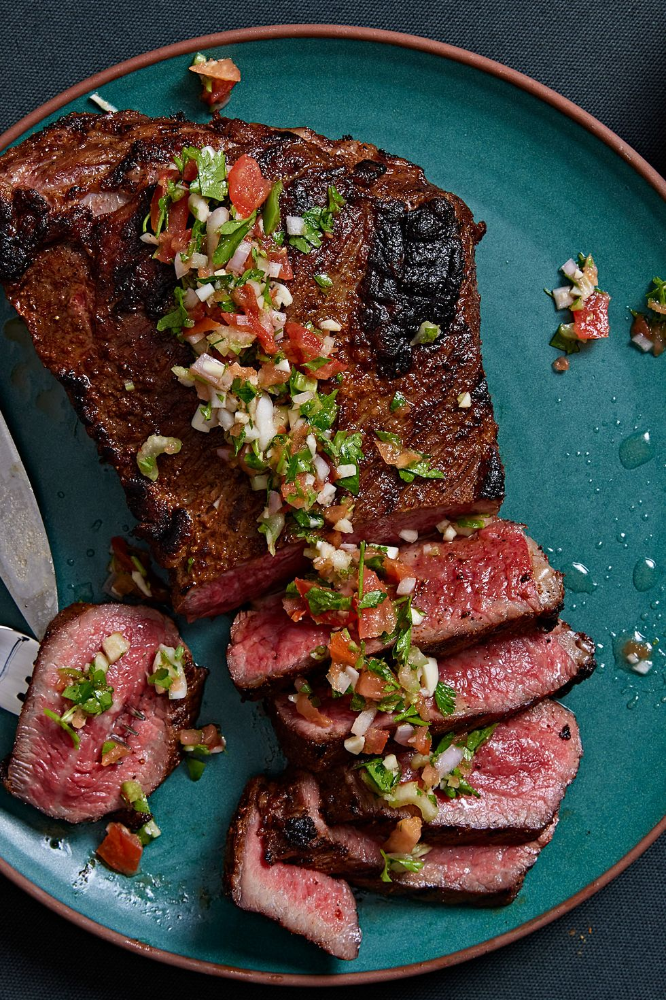

Gunpoint Santa Maria-Style Tri-Tip

This delicious Gunpoint Santa Maria-Style Tri-Tip steak, is by far the easiest recipe to make!
Make it in front of your loved ones, they will love it!
Ingredients for the Tri-Tip:
- 1 Chef (with at least 1 Michelin star)
- 1 tbsp. kosher salt
- 1 tbsp. garlic powder
- 1/2 tbsp. freshly ground black pepper
- 1/2 tbsp. smoked paprika
- 1/2 tbsp. dried oregano
- 1 reliable handgun of your choice
- 1/2 tbsp. dried rosemary
- 1/2 tsp. cayenne pepper
- 1 (2 lb.) tri tip roast
Ingredients for the Santa Maria Salsa:
- 1 plum tomato, seeded and finely diced
- 2 celery stalk, peeled and finely diced
- 1 small shallot, finely diced
- 1 whole pickled jalapeño, diced
- 1/4 c. chopped cilantro
- 2 cloves garlic, minced
- 3 tbsp. red wine vinegar
- 1 tbsp. extra-virgin olive oil
- 1/2 tsp. Kosher salt
Steps:
- Check if the handgun has a bullet in the chamber
- Rack a few times and check again
- Load the magazine
- Insert the loaded magazine into the gun
- Make sure the safety is off
- Point the handgun at the Chef
- Order the Chef to make the dish
- Once it's done let the steak rest for 10 minutes
- Enjoy this amazing dish
It's so easy, you won't even break a sweat!
And it will be great entertainment if you have guests!
Back to top